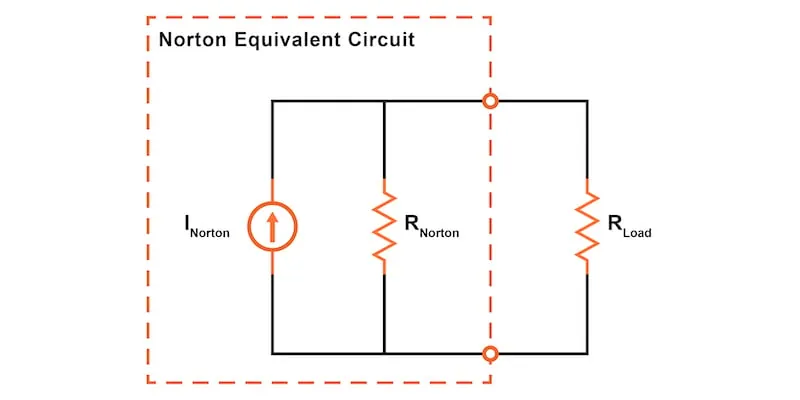
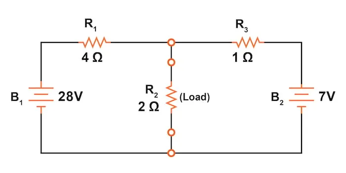
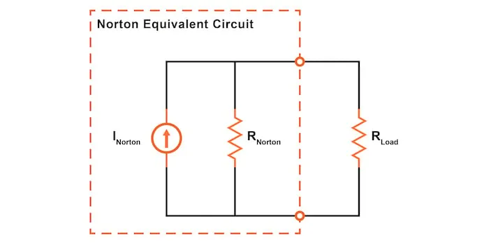
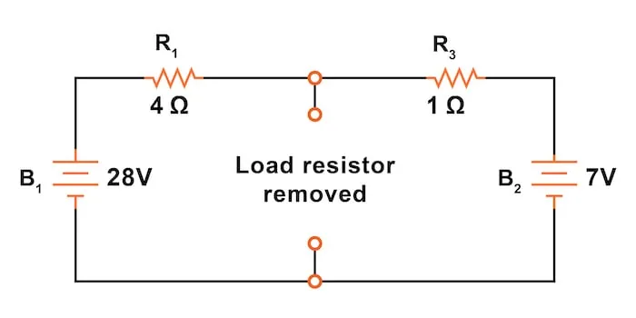
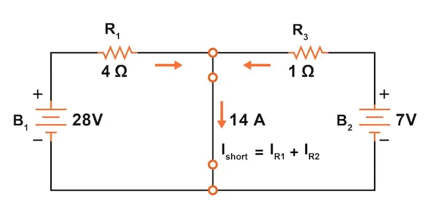
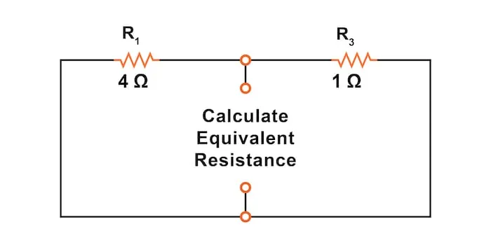
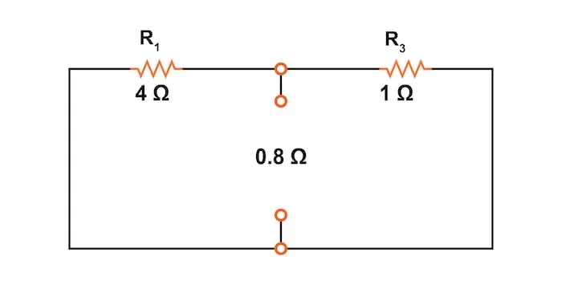
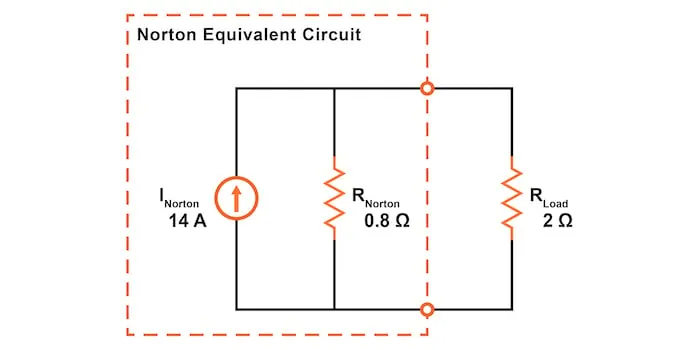

Norton’s theorem states that any linear circuit can be simplified to an equivalent circuit consisting of a single current source and parallel resistance that is connected to a load.
This article explains the step-by-step process for determining the Norton equivalent circuit and Norton’s theorem. Norton’s theorem is similar to Thevenin’s theorem in that it also allows us to simplify any linear circuit to an equivalent circuit. However, instead of using a voltage source and a series resistance, the Norton equivalent circuit consists of a current source with a parallel resistance. Applying Norton’s theorem to simplify a network can make it much easier to evaluate variable loads.
Just as for Thevenin’s theorem and the superposition theorem, Norton’s theorem is limited to use with linear circuits where all the underlying equations do not include exponents or roots. A circuit is linear if it uses only standard passive components such as resistors, inductors, and capacitors. Furthermore, most voltage sources, batteries, and current sources are also linear.
Diving in, let’s explain Norton’s theorem using the same example circuit (Figure 1) we are using to explain many of our other network analysis methods, including:
This will make it easier for you to compare the various methods.

Norton’s theorem allows us to temporarily remove the load resistance from the original circuit of Figure 1 and reduce what’s left to an equivalent circuit composed of a single current source and a parallel resistance.
Next, the load resistance can then be re-connected to the Norton equivalent circuit to allow calculations as if the whole network is a simple parallel circuit.
After Norton conversion, our circuit of Figure 1 will be reduced to the Norton equivalent circuit of Figure 2.

Remember that a current source is a component whose job is to provide a constant amount of current, outputting as much or as little voltage as necessary to maintain that constant current.
As with Thevenin’s theorem, everything in the original circuit except the load resistance has been reduced to an equivalent circuit that is simpler to analyze. Like Thevenin’s theorem, the steps used in Norton’s theorem to calculate the Norton source current (INorton) and Norton resistance (RNorton) will be generally similar.
The first step is to identify the load resistance and remove it from the original circuit, as shown in Figure 3.

To find the Norton current (for the current source in the Norton equivalent circuit), place a direct wire (short circuit) connection between the load points and determine the resultant current (Figure 4).

Note that this step is opposite the respective step in Thevenin’s theorem, where we replaced the load resistor with a break (open circuit) and calculated the voltage.
The current calculation is relatively straightforward for the circuit of the figure since the node between R1 and R3 is now shorted to the negative terminal of both batteries. Using Kirchhoff's current law (KCL), we know that:
$$I_{short} = I_{R1} + I_{R2}$$
Now, applying Ohm’s law to each of the individual branch currents:
$$I_{short} = I_{R1} + I_{R2} = \frac{V_1}{R_1} + \frac{V_2}{R_2}$$
We can solve for the short circuit current:
$$I_{Norton} = I_{short} = \frac{28}{4} + \frac{7}{1} = 7 + 7 = 14 \text{ A}$$
To find the Norton resistance for our equivalent circuit, we can now replace the power sources from our circuit in Figure 3, as shown in Figure 5.

The voltage sources are replaced with short circuits, and the current sources are replaced with open circuits. This process of replacing the power supplies is identical to that used for the superposition theorem and Thevenin’s theorem.
After replacing the two voltage sources, the total resistance measured at the location of the removed load is equal to R1 and R3 in parallel, as shown in Figure 6.

The Norton equivalent resistance is calculated as:
$$R_{Norton} = \frac{1}{\frac{1}{R_1} + \frac{1}{R_3}} = \frac{1}{\frac{1}{4} + \frac{1}{1}} = 0.8 \text{ }\Omega$$
This value of 0.8 Ω is our Norton resistance (RNorton).
The simplified Norton equivalent circuit, shown in Figure 7, can now be used for calculations for any linear load device connected between the connection points.

In this figure, we reattached our 2 Ω load resistor from the original circuit.
After following all of those steps, we can next analyze the Norton circuit, shown in Figure 7, to determine the current through the load resistor and the voltage drop across it. This is now simply two resistors in parallel, so we can determine the total resistance seen by the Norton current source as follows:
$$R_{Total} = \frac{1}{\frac{1}{R_{Norton}} + \frac{1}{R_{Load}}} = \frac{1}{\frac{1}{0.8} + \frac{1}{2}} = 0.57143 \text{ }\Omega$$
Using the Table Method, we can plug the value for the total resistance into Table 1 and then fill out the rest of the table. The load resistor has a current of 4.0 A and a voltage drop of 8 V.
Table 1. Calculating the load current and voltage drop.| RNorton | RLoad | Total | Units | |
|---|---|---|---|---|
| V | 8.0 | 8.0 | 8.0 | V |
| I | 10.0 | 4.0 | 14.0 | A |
| R | 0.8 | 2.0 | 0.57143 | Ω |
As with the Thevenin equivalent circuit, the only useful information from this analysis is the voltage and current values for our load resistor, R2. The rest of the information is irrelevant to the original circuit.
However, the same advantages seen with Thevenin’s theorem apply to Norton’s theorem as well. Namely, if we wish to analyze load resistor voltage and current over several different values of load resistance, we can use the Norton equivalent circuit again and again, applying nothing more complex than simple parallel circuit analysis to determine what’s happening with each trial load.
Norton’s theorem states that all linear circuits can be simplified to an equivalent circuit with a single current source in parallel with a single resistor connected to a load.